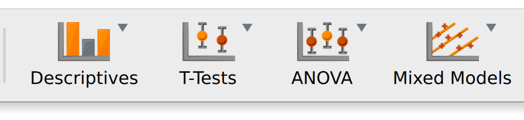
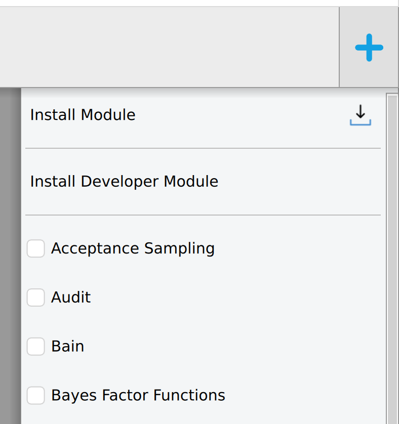
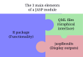

graph TD
subgraph Minimum
git --> github
R --> Functions
end
Template --> QML
Functions --> Packaging
JASP Module Development Guide
From first steps to publishing your module
Welcome & Overview
This guide covers everything you need to know to develop a JASP module — from setting up your environment to publishing in the JASP Module Library.
What is a JASP module?
A JASP module is an extension that adds new statistical analyses to JASP. Modules appear in the ribbon bar at the top of JASP and can be installed via the + icon.


Internally, a JASP module is an R package with additional QML files for the graphical interface:

- R code — your statistical computations, using any CRAN/Bioconductor packages
- QML interface — the options panel users interact with
- jaspResults — the bridge that renders tables, plots, and text in JASP’s output
Who is this guide for?
Anyone who wants to create or contribute to JASP modules. You need:
- Basic R — functions, data manipulation,
data.frameoperations - Basic Git/GitHub — clone, commit, push, pull requests
- Familiarity with R packaging — helpful but not required (we’ll cover the essentials)
- QML knowledge — not required; you’ll learn it here
How this guide is organised
| Part | What you’ll learn |
|---|---|
| I. Getting Started | Environment setup, module template, file structure |
| II. Building Your Module | R backend (jaspResults API), QML interface, the QML↔︎R connection |
| III. Quality & Standards | Coding style, error messages, i18n, testing, backward compatibility |
| IV. Publishing & Maintenance | Versioning, releasing, community/official module submission, Git workflow |
| V. Advanced Topics | AI-assisted development, building JASP from source, debugging, licensing |
Quick start
The fastest path to a working module:
- Fork jaspModuleTemplate
- Clone it locally
- Install JASP nightly
- Install your module as a development module in JASP (see Chapter 2)
- Edit R and QML files, recompile, refresh — iterate
The rest of this guide explains each step in detail.